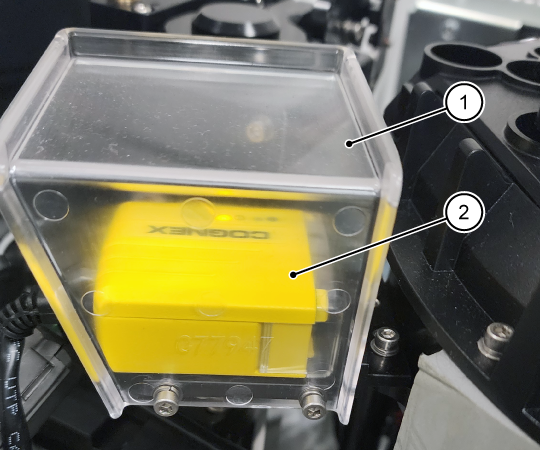
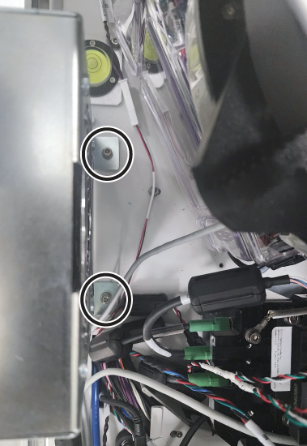
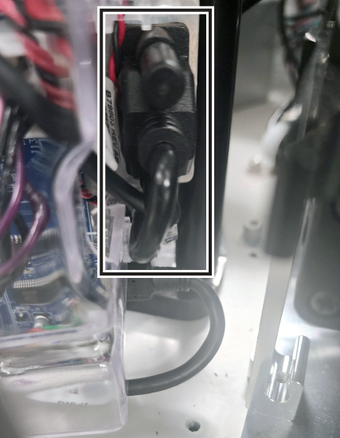
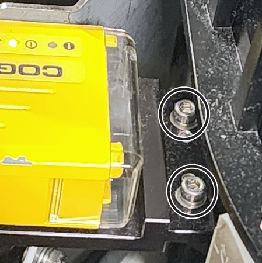
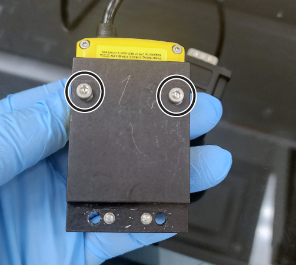

This topic is about how to replace the wash wheel camera.
Safety Reminder
Servicing the DxI 9000 instrument involves potential risks for pinch and puncture, electrical shock, and exposure to hazardous materials. You must mitigate these risks by taking appropriate countermeasures. See
Safety for more information.
Tools
To replace the camera, you will need the following tools:
Find the wash wheel camera. The camera is yellow and includes the Cognex brand name. The camera is mounted onto the wash wheel. There may be a frosted plastic cover over the camera.
Figure 450: Wash Wheel Camera and Backlight
1
Backlight
2
Camera
Figure 451: Wash Wheel Camera and Frosted Plastic Cover

1
Frosted plastic cover
2
Camera
Disconnect the Ethernet cable from the rear of the camera.
From the rear of the instrument, open the left-side cabinet door. Find the chassis fan that is attached to the frame in front of the wash wheel.
Disconnect the power cable for the fan.
Use the M3 hex screwdriver to remove the screws for the fan housing and to remove the fan from the instrument.
Figure 452: Fan Housing Screws

Find the Serial cable for the camera. The cable's Serial connector is seated beneath the wash wheel and adjacent to the DMCC printed circuit board (PCB).
Unscrew the Serial connector's screws to disconnect the Serial cable.
Figure 453: Serial Cable Connector

Push the Serial cable connector and cable beneath the wash wheel and under the metal mounting plate and DMCC PCB.
From the front of the instrument, find the disconnected camera cable and remove it from the J-clip.
Pull the disconnected camera cable out from beneath the wash wheel.
Hold the camera mount plate and use the M2.5 hex screwdriver to remove the two screws that hold the mount plate to the wash wheel.
Figure 454: Wash Wheel Camera Mount Plate Screws at Wash Wheel

Use the M2.5 hex screwdriver to remove the two screws from the bottom of the mount plate.
Figure 455: Wash Wheel Camera Mount Plate Screws (Bottom)

Remove all film from the clear plastic on the new camera.
With the camera lens facing the screw holes opposite the mounting posts on the mount plate, use the M2.5 hex screwdriver and screws to attach the new camera to the mount plate.
Fully seat the mounting posts for the mount plate to the wash wheel and use the M2.5 hex screwdriver to attach the mount plate to the wash wheel.
Push the disconnected cable and connector for the new camera beneath the wash wheel and use the J-clip to secure the cable.
Connect the Ethernet cable to the rear of the camera.
From the back of the instrument, pull the Serial cable connector and cable beneath the wash wheel and under the metal mounting plate and DMCC PCB.
Screw the Serial connector screws to seat the connector.
Use the M3 hex screwdriver and screws for the fan housing to attach the fan to the instrument.